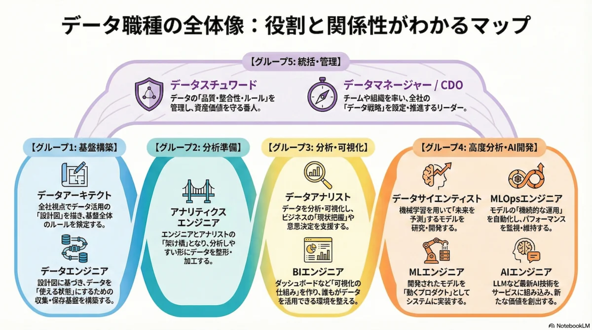

Why
これまで、データアナリストが時間を投下していた、「集計・ビジュアライズ領域」がほぼAIで代替可能になりつつあるので、「事業戦略的な領域」に広げるか、「AIのためのデータ整備領域」に広げるか、って感じですよね〜。データエンジニアも同様ではあるので、境界はどんどん溶けていきそう。 pic.twitter.com/9jKkmXKX84
— ikki / stable代表 (@ikki_mz) August 6, 2026
これまで、データアナリストが時間を投下していた、「集計・ビジュアライズ領域」がほぼ AI で代替可能になりつつあるので、「事業戦略的な領域」に広げるか、「AI のためのデータ整備領域」に広げるか、って感じですよね〜。データエンジニアも同様ではあるので、境界はどんどん溶けていきそう。
このポストが刺さったので、データエンジニア視点で自分の守備範囲を棚卸ししておきたくなった。
「AI で仕事が無くなる」ではなく、時間の配分先が変わるという話として読んでいる。
What
前提 : 境界はどこに引かれていたか
Warning
「境界が溶ける」の話をする前に、そもそもどれだけ細かく引かれていたかを押さえておきたい。
14職種に分かれていた（2023）
現場でデータマネジメントを担当する方(実は某大手のデータマネジメントの長お世話になった凄い人)による、 実際に絡んだことのある14職種の整理によると以下になる。
| レイヤ | 職種 | 役割 |
|---|---|---|
| 分析 | データサイエンティスト | 数理的知識で分析・解釈し、意思決定と問題解決を支援 |
| 分析 | データアナリスト | ドメイン知識 + SQL / BI で実務に即した分析提案 |
| エンジニア | アナリティクスエンジニア | 変換・テスト・ドキュメントでクリーンなデータを提供 |
| エンジニア | 機械学習エンジニア | ML をプロダクトに載せる基盤・システムを構築 |
| エンジニア | データエンジニア | データを集め、整理し、データ基盤を構築 |
| ディレクター | データディレクター | 特定事業領域のデータ管理・ガバナンスを統括 |
| ディレクター | データマネージャー | 組織全体で収集〜活用を最適化 |
| プロデューサー | データストラテジスト | 企画から実装まで全工程のプロジェクトマネジメント |
| プロデューサー | データプロダクトマネージャー | 組織戦略に沿ったデータアウトプット創出の責任者 |
| ビジネス | データスチュワード | 業務を理解した上でデータを理解する |
| ビジネス | データオーナー | データ生成業務を統括し、生成データの決定権を持つ |
| ガバナンス | CDO | 攻めのデータガバナンスの最高責任者 |
| ガバナンス | データプライバシーオフィサー | 守りのデータガバナンスの最高責任者 |
| ガバナンス | データガバナー | 攻めと守りのバランスを取って実行を推進 |
Important
この記事で指摘されている ミスマッチ が、そのまま今回の話につながる。
- データサイエンティスト …… 「名前でデータ何でも屋を期待されるミスマッチが起こりやすい」
- データアナリスト …… 「レポート作成屋になると成果に繋がらない」
- データエンジニア …… 「雑用が増えると不満が溜まる」
「レポート作成屋」と「雑用」—— まさにここが AI に引き取られつつある領域である。
cf. データ系の職種で絡んだことある14職種の役割書く note
5グループに整理し直された（2026）
2026年1月時点の整理。役割ごとに5グループへまとめ直されている。この図が非常に分かりやすい。

出典: データを扱う職種について in 2026/01 Qiita @masukai（図は NotebookLM 生成）
Note
元記事自身も「LLM の普及により職種間の統合が進む」と予測している。
つまり この地図は、描かれた時点ですでに書き換わり始めている。
押さえどころ
- 2023年に 14職種、2026年初頭に 5グループ 12職種 —— 細分化は「データ活用が専門化した」結果
- ただしこの分類軸は、誰が何を「実装」するかで切られている
- AI がその「実装」を引き取り始めた以上、分類軸そのものが意味を失いつつある
これが、以下の話の出発点になる。
元ネタの構図 : AI 時代のデータ分析（氷山）
添付されていた図は「データ分析の氷山」で、水面上（見えている作業）は AI で代替可能、水面下（見えていない作業）はまだ代替不可能という整理だった。
| 水位 | 領域 | 中身 | AI 代替 |
|---|---|---|---|
| 水面上 | ビジュアライズ | 集計結果のグラフ化 | ✅ ほぼ代替可能 |
| 水面上 | シンプルな集計 | 合計・平均など単純な集計 | ✅ ほぼ代替可能 |
| 水面下 | 特別な集計 | 目的とデータ特性に合わせた集計 | ⚠️ 現時点では困難 |
| 水面下 | データマート作成 | 将来の使用に耐えるマート設計 | ⚠️ 現時点では困難 |
| 水面下 | データ収集・整備 | 必要データの収集、有用性確認、クレンジング | ⚠️ 現時点では困難 |
| 水面下 | 分析設計・戦略 | KGI / KPI 設計、ゴール設計と指標の設定 | ❌ 代替不可能 |
Note
水面上は「美しいデータが整えられた世界」、水面下は「戦略にあったデータを狩りに行く世界」。
AI が強いのは前者 —— つまり 入力が整っている前提の作業。
これまでのデータエンジニアの守備範囲
ざっくり一行で言うと「データを、壊さず・安く・時間通りに・使える形で届ける」だった。
flowchart LR
A[Source<br/>DB / SaaS / Log] -->|EL| B[(DWH<br/>BigQuery)]
B -->|T| C[Data Mart<br/>dbt]
C --> D[BI<br/>Looker]
C --> E[Application<br/>ML / API]
F[Orchestration<br/>Airflow] -.-> A
F -.-> B
F -.-> C
| フェーズ | やってきたこと | 時間の使い方 |
|---|---|---|
| 収集 (EL) | コネクタ実装、差分取り込み、スキーマ変更の追従 | 実装 6 : 設計 4 |
| 変換 (T) | SQL / dbt モデル、マート設計、命名規約 | 実装 5 : 設計 5 |
| オーケストレーション | DAG 実装、リトライ、バックフィル、依存管理 | 実装 7 : 設計 3 |
| 運用 | 監視、障害対応、コスト最適化、権限管理 | 対応 8 : 予防 2 |
| 提供 | BI へのモデル提供、データ利用者のサポート | 対応 7 : 設計 3 |
「実装」と「対応」に時間の大半が乗っていた。ここが今、まるごと圧縮されにかかっている。
何が AI に溶けたか
Important
溶けたのは 「書く」。残ったのは 「決める」 と 「保証する」。
| 作業 | AI 代替度 | 残る仕事 |
|---|---|---|
| SQL を書く | 高 | 「何を計算すべきか」の定義と、結果の正しさの担保 |
| dbt モデルの雛形・定型部分 | 高 | 粒度・履歴保持 (SCD)・命名の設計判断 |
| ダッシュボードを作る | 高 | 「何を見るべきか」「見て何を決めるか」の決定 |
| ドキュメント / description | 高 | 事実として正しいかのレビュー |
| パイプラインのコード | 中 | 冪等性・リトライ・バックフィル・障害時の巻き戻し設計 |
| 障害の一次切り分け | 中 | 本番での意思決定、影響範囲とリカバリの判断 |
| データモデリング | 低 | ドメイン知識と「将来どう使われるか」の予測 |
| 品質・信頼性の担保 | 低 | SLA / SLO、データ契約、テスト戦略 |
| ガバナンス・権限・コスト | 低 | 組織横断の合意形成とトレードオフの説明 |
Tip
「AI で SQL が書けるから DE が要らない」ではなく、SQL を書く時間が安くなった分、設計と保証に時間を寄せられるようになった、と読むほうが実態に近い。
これから — 広げる先は2方向
元ポストの通り、広げる先は大きく2つ。どちらも「水面下」に潜る方向である点が肝。
flowchart TD
A[これまでの守備範囲<br/>EL / T / 運用 / 提供] --> B{AI が水面上を代替}
B -->|上流へ| C[事業戦略領域<br/>指標を決める側に回る]
B -->|下流を深く| D[AI のためのデータ整備<br/>AI-ready なデータを作る]
C --> E[境界が溶ける<br/>DE / DA / AE / ML]
D --> E
(1) 事業戦略側へ広げる
「指標を計算する人」から「指標を決める人」へ。
- KGI / KPI の設計に、設計段階から入る
- 指標定義のオーナーシップを持つ（どこが正か、誰が変更できるか）
- 「その指標は計算可能か」「維持可能か」「歪まないか」を最初に判断する
Note
ここは データエンジニアが入ると強い。
「その KPI、ログが取れていないので今は測れません」「その定義だとタイムゾーン跨ぎで壊れます」を 企画の段階で言えるのは、基盤を知っている人だけだから。
| 従来 | これから |
|---|---|
| 指標定義は事業側からの依頼 | 指標定義の設計レビューに入る |
| 「その集計、SQL 書きます」 | 「その意思決定なら、この指標のほうが効きます」 |
| 数値の再現性を守る | 数値の 意味 の再現性を守る（定義のバージョン管理） |
(2) AI のためのデータ整備側へ広げる
AI が「整ったデータ」の上でしか強くないなら、整える仕事の価値は上がる。
| 観点 | やること | なぜ AI 時代に効くか |
|---|---|---|
| セマンティクス | テーブル / カラムの description、メトリクス定義の一元化 | AI は メタデータを読んで クエリを組み立てる。説明が無い列は誤用される |
| 品質 | テスト、データ契約、鮮度の SLO | AI は 壊れたデータでも自信満々に答える。人間の「あれ、変だな」が挟まらない |
| リネージ | 依存関係の可視化 | 誤った出力の 原因を遡る ための唯一の手がかり |
| インターフェース | AI が叩く用のビュー / API / MCP サーバ | 生テーブルを直接叩かせない。安全な入口 を設計する |
| 権限 | 行レベル・列レベルのアクセス制御 | エージェントに渡す権限は 人間より狭く 設計する必要がある |
| 評価用データ | 正解セット、リグレッション用のスナップショット | AI の出力を 検証可能 にする |
Warning
AI にデータを触らせるとき、「読めてしまう」と「読ませてよい」は別物。
エージェント経由のアクセスは、人間のアクセス以上に権限設計とログを厳しくしておきたい。
境界はどう溶けるか
flowchart LR
subgraph these[これまで]
A1[Data Engineer<br/>基盤・パイプライン]
A2[Analytics Engineer<br/>モデリング]
A3[Data Analyst<br/>集計・可視化]
A4[ML Engineer<br/>学習・推論]
end
subgraph future[これから]
B1[戦略・指標設計]
B2[AI-ready なデータ整備]
B3[保証・ガバナンス]
end
A1 --> B2
A1 --> B3
A2 --> B1
A2 --> B2
A3 --> B1
A4 --> B2
冒頭で見た職種たちを、この軸で置き直すとこうなる。
| ロール | 溶けやすい部分 | 濃くなる部分 |
|---|---|---|
| データエンジニア | パイプライン実装、定型的な運用対応 | データ品質の保証、AI 向けインターフェース設計 |
| アナリティクスエンジニア | モデルの実装、ドキュメント生成 | セマンティックレイヤーの設計、指標の正典化 |
| データアナリスト | 集計、ダッシュボード作成 | 分析設計、意思決定への接続 |
| BI エンジニア | ダッシュボード実装、定型レポート | 「何を見せるか」の設計、指標の一貫性 |
| ML エンジニア | 定型的な前処理、実験コード | 評価設計、データの妥当性検証 |
| データスチュワード | —（もともと実装業務が薄い） | むしろ全職種に溶け込んでいく役割 |
Note
全員が「水面下に潜る」方向に動く。
結果として、職種名で守備範囲を切る意味が薄くなる。
一方で、品質とルールを見る データスチュワード的な機能は、誰かの専任ではなく全員の職務に混ざっていく。
明日から何をするか
- 自分が持っているマートについて、「誰がどの意思決定に使っているか」を1つ言語化する
- dbt の
descriptionとtestsを埋める —— 人間向けではなく AI 向けの資産として - 指標定義を1本、「ここが正」と言える場所（コード）に置く
- AI / エージェントに叩かせてよい 安全なビューと権限 を1本作って試す
- 「書く」作業を AI に寄せて、浮いた時間を設計とレビューに回す（浮かせただけで終わらせない）
Tip
最後の1つが一番むずかしい。空いた時間は放っておくと運用対応で埋まるので、意識的に設計へ配分する。
まとめ
- AI が代替したのは 水面上（整ったデータ上の集計・可視化）
- 残ったのは 水面下（何を測るか、どう整えるか、どう保証するか）
- データエンジニアの広げ先は 事業戦略 か AI のためのデータ整備、あるいは両方
- どちらに寄っても、職種の境界は溶ける
Important
「実装できること」ではなく「決められること・保証できること」が守備範囲になっていく。
Ref.
- ikki / stable代表 — X post
- データ系の職種で絡んだことある14職種の役割書く note
- データを扱う職種について in 2026/01 Qiita
- dbt — Add data tests to your DAG
- dbt — Model contracts
- dbt — About the dbt Semantic Layer
- Looker — What is LookML?
- BigQuery — Introduction to row-level security
- Dataplex Universal Catalog documentation
- Model Context Protocol